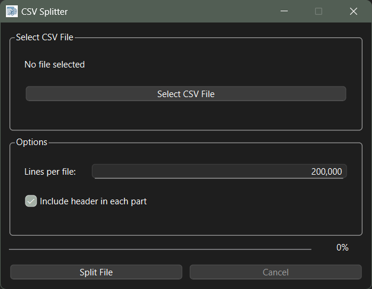

Excel-friendly output
Choose a row count per part and create smaller files that are easier to open, inspect, and share.
Free open source Windows app
CSV Splitter breaks large CSV, TXT, XML, and log files into smaller numbered parts with optional repeated headers, using a simple desktop interface.
Split files before Excel's 1,048,576-row limit gets in the way.

Choose a row count per part and create smaller files that are easier to open, inspect, and share.
Keep the source header row at the top of every generated file so each part remains understandable on its own.
Select a file, set a line count, and split from a PySide6 desktop GUI.